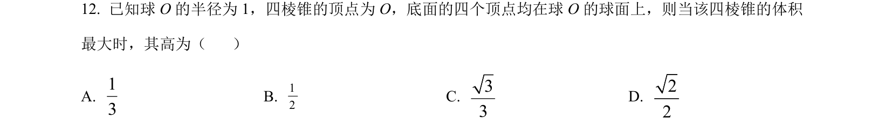
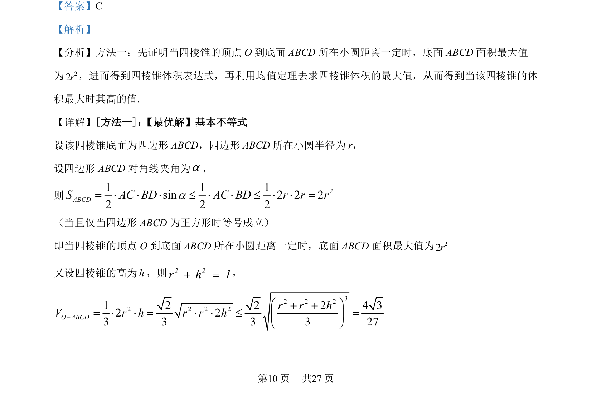
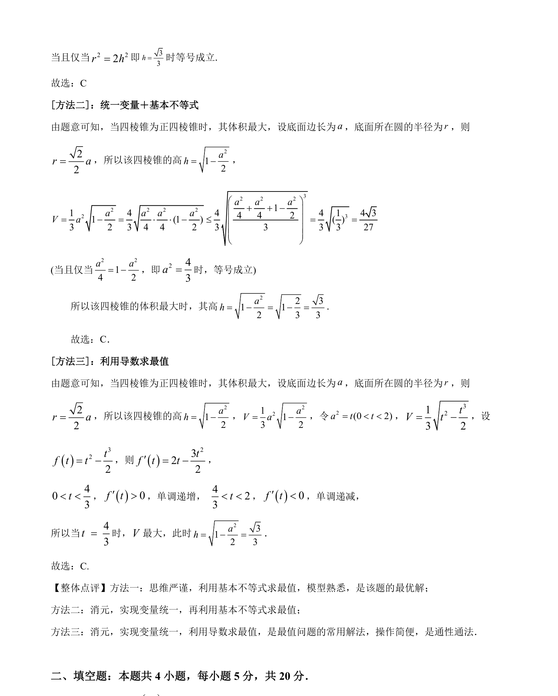

考点：四棱锥体积 基本不等式 最值 几何体

本题通过几何分析和均值不等式求四棱锥体积最大值时对应的高。


📄 原 PDF 第 10 页：
素材/真题/吉林/2008-2024·（吉林）数学高考真题/2022年高考数学试卷（文）（全国乙卷）（解析卷）.pdf
【答案】C 【解析】 【分析】方法一：先证明当四棱锥的顶点 O 到底面 ABCD所在小圆距离一定时，底面 ABCD面积最大值 为22r，进而得到四棱锥体积表达式，再利用均值定理去求四棱锥体积的最大值，从而得到当该四棱锥的体 积最大时其高的值. 【详解】[方法一]： 【最优解】基本不等式 设该四棱锥底面为四边形 ABCD，四边形 ABCD所在小圆半径为 r， 设四边形 ABCD对角线夹角为a， 则 21 1 1sin 2 2 22 2 2ABCDS AC BD AC BD r r ra= × × × £ × × £ × × = （当且仅当四边形 ABCD为正方形时等号成立） 即当四棱锥的顶点 O 到底面 ABCD所在小圆距离一定时，底面 ABCD面积最大值为22r 又设四棱锥的高为h，则2 2r h 1+ =， 32 2 22 2 2 21 2 2 2 4 32 23 3 3 3 27O ABCDr r hV r h r r h- æ ö+ += × × = × × £ =ç ÷è ø